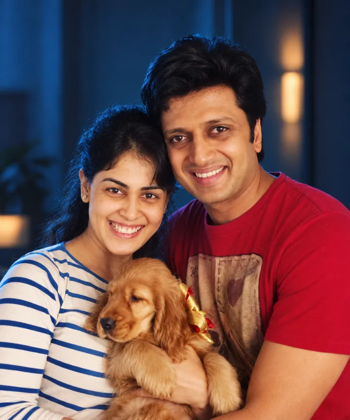

001
CineKind Compassion
Dr Harsha Atmakuri
Maa Ka Doodh. Courageous, truth-driven filmmaking.
Film sourceCineKind 2026 · Mumbai · 4 October · World Animal Day
A collaborative initiative by the Film Federation of India and People for Animals

The CineKind trophy
Each trophy is a sculpture by Paresh Maity. Winners are chosen by the CineKind National Awards Committee.
This year
Announced ahead of Mumbai, 4 October 2026. Eleven honours for films and people who leave the frame kinder than they found it.
001
Change of Heart / Heart of Gold
002
Director of Change
003
Voice of the Voiceless
004
Champion for Animals
005
Kindness Catalyst
006
Beacon of Hope
007
Kindness in Frame

008
Innovation for Compassion
009
Compassionate Care
010
Ray of Sunshine
011
Values in Action
Last year
Film Federation of India with People for Animals. Kolkata, 20 December 2025. Ten honours for films and people who made the case for animals on a national stage.
About
CineKind asks whether it can move us toward animals too. A roll of honours, given once a year, for films and people who leave the frame kinder than they found it.
Presented by
FFI with PFA
First edition
Kolkata 2025
Date
20 December
Honours
21 across two editions
Roll of honour
Six of the ten honours from the inaugural edition. The full list follows below.
001
CineKind Compassion
Maa Ka Doodh. Courageous, truth-driven filmmaking.
Film source
002
Director of Change
With Aryeman Ramsay. The Land of Ahimsa.
Film source
003
Actor for Kindness
Animal rescue and adoption. Compassion beyond the screen.
Photo source
004
Innovation for Compassion
Fish Eye Network. Animal-free filmmaking.
Photo source
005
Visual Storyteller
Mongabay India. Environmental journalism.
Photo source
006
Humane Influence
A public voice for street animals. Care, vaccination and coexistence.
Photo sourceThe 2025 honours
The ceremony
Kolkata, 20 December 2025. Ten honours presented by the Film Federation of India with People for Animals.


Ceremony photographs by the Film Federation of India, from the CineKind Award 2025 event page. Used with the Federation’s permission as co-presenter of the award.
Before the camera rolls
A real animal in a directed shot needs pre-shoot permission from the Animal Welfare Board of India. CineKind puts the process in plain language, before a production learns it too late.
Select the closest description of the scene.
CineKind 2025
The inaugural awards put humane storytelling on the national film industry's record. Explore the official event archive or read the government broadcaster's report from the ceremony.
Film Federation of India with People for Animals · Inaugural edition · Kolkata